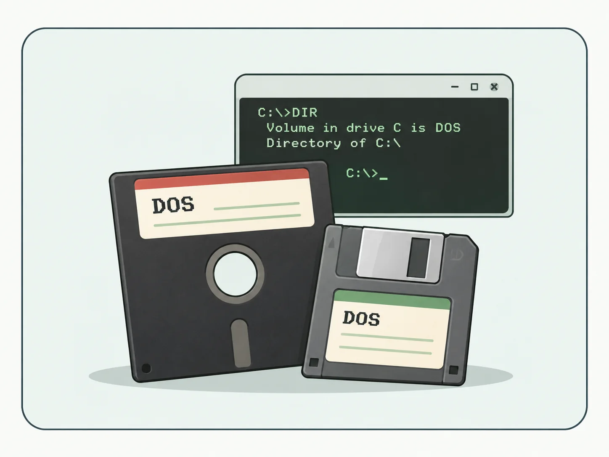
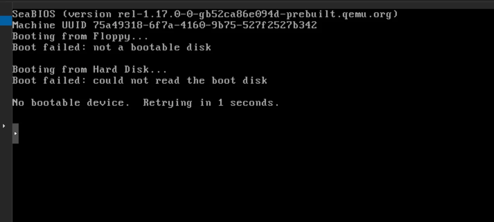
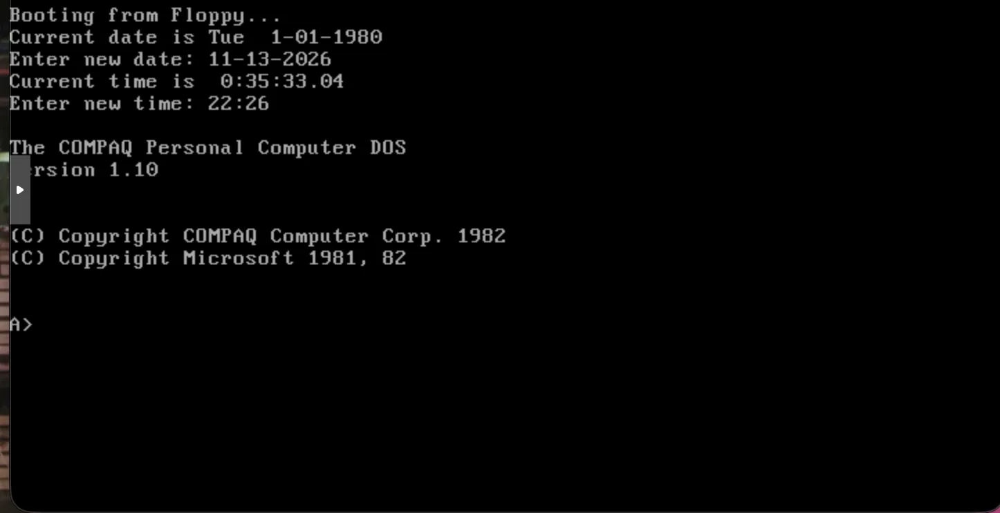
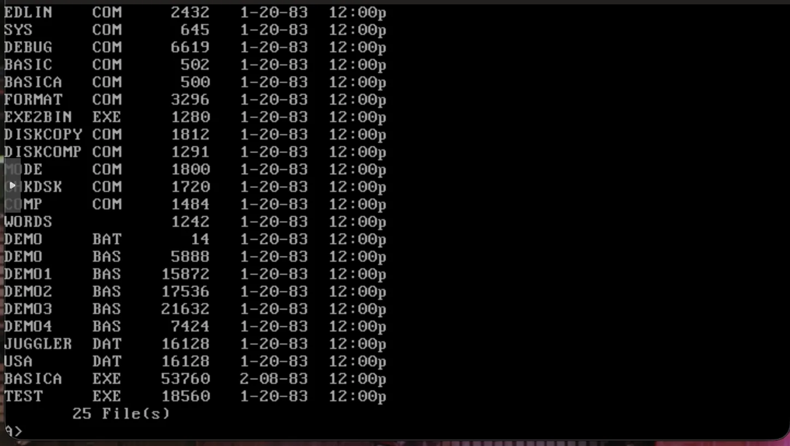
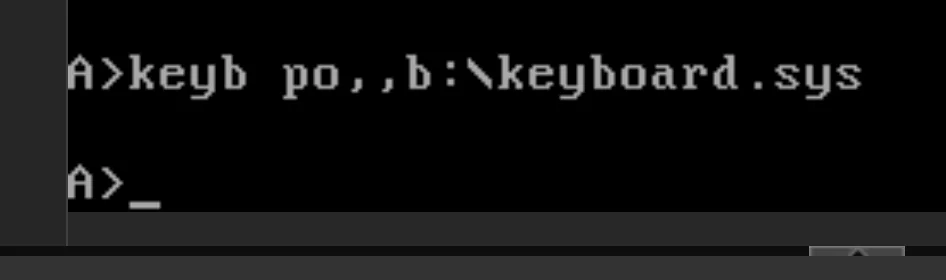
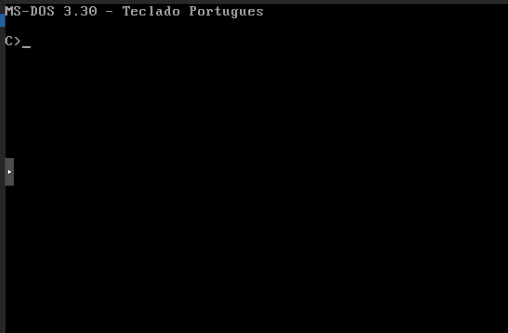
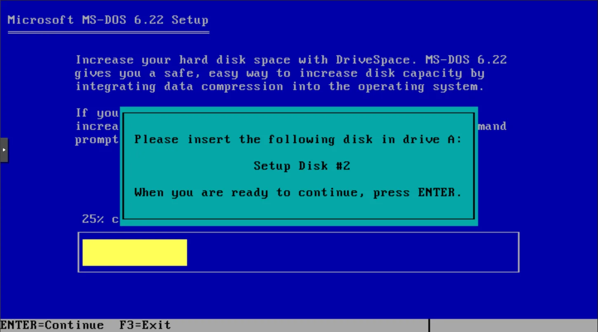
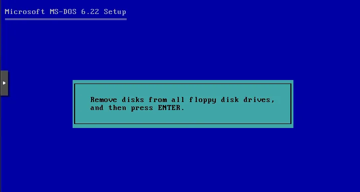
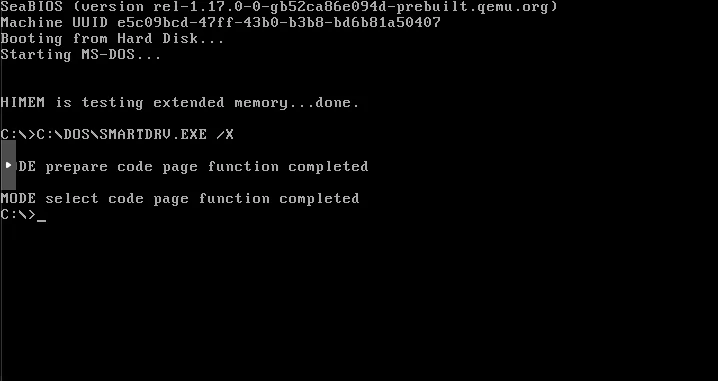

LABORATÓRIO RETRO · TESTES REAIS · NOVEMBRO DE 2026
Três gerações de MS-DOS, um Proxmox atual
Um laboratório virtual com três experiências diferentes: um DOS OEM do princípio da década de 1980, o MS-DOS 3.30 de 1987 e o MS-DOS 6.22 de 1994. Não são instalações reconstituídas a partir de tutoriais: são os resultados efetivamente observados, com configurações, comandos e capturas.
Como interpretar as datas: 1982–83 corresponde à geração e identificação da edição Compaq testada; 1987 e 1994 aos lançamentos das versões MS-DOS 3.30 e 6.22. Os testes da Wiki foram realizados a 13 de novembro de 2026.

1982–83 · VM 301 · ARRANQUE VALIDADO
Compaq DOS 1.25: versão OEM testada
A imagem foi obtida como MS-DOS 1.25 Compaq OEM r1.10 Rev B; no ecrã de arranque identifica-se como COMPAQ Personal Computer DOS, Version 1.10. Conservamos ambas as designações para não confundir a identificação do arquivo com a que o sistema apresenta.
Esta versão arranca diretamente de uma disquete de 5,25 polegadas com 320 KB (327 680 bytes). Não instalámos um sistema no disco rígido: a VM 301 foi criada sem disco e sem interface de rede, com BIOS SeaBIOS, CPU 486 emulada, KVM desligado e 16 MB de RAM.
O erro que valeu a pena guardar
Na primeira tentativa, a SeaBIOS reconheceu a unidade A: mas apresentou Boot failed: not a bootable disk. A imagem tinha código de arranque nos primeiros bytes, porém terminava o setor 0 com 00 00, em vez da assinatura 55 AA habitualmente esperada pela BIOS.

A solução foi criar uma cópia de trabalho e alterar exclusivamente os dois bytes finais do primeiro setor. A imagem original foi preservada.
cp MSDOS125_Compaq.img MSDOS125_Compaq_SeaBIOS.img
printf '\x55\xAA' | dd of=MSDOS125_Compaq_SeaBIOS.img \
bs=1 seek=510 conv=notrunc status=none
od -Ax -tx1 -j510 -N2 MSDOS125_Compaq_SeaBIOS.imgDepois de montar a cópia corrigida, a máquina arrancou e apresentou o prompt A>. A listagem DIR mostrou 25 ficheiros, incluindo EDLIN, DEBUG, BASIC, BASICA e programas de demonstração.


Nota histórica: o DOS mostrou data inicial de 1980 e pediu a data/hora manualmente. Não foi demonstrada sincronização persistente do relógio; isso não impede o funcionamento do sistema.
1987 · VM 302 · INSTALADO NO SSD
MS-DOS 3.30: duas disquetes e um disco C:
Ao contrário da experiência anterior, a versão 3.30 foi instalada num disco rígido virtual. As duas imagens de disquete têm 360 KB (368 640 bytes), já contêm a assinatura 55 AA e arrancaram sem alteração.
Teclado português: a solução estava na outra disquete
O programa KEYB.COM estava na unidade A:, mas o ficheiro KEYBOARD.SYS encontrava-se na unidade B:. A simples execução de KEYB PO não carregava a definição. O comando que efetivamente funcionou foi:
A:\KEYB.COM PO,,B:\KEYBOARD.SYSDepois, os ficheiros foram copiados para o disco C: e a configuração automatizada através de AUTOEXEC.BAT.

Instalação no disco rígido
Foi criado um disco IDE de 32 MB no armazenamento VM-SSD. O FDISK criou a partição primária ativa; após reiniciar pela disquete, a partição foi preparada com FORMAT C: /S. Foram depois copiados os utilitários das disquetes e preparado o arranque diretamente pelo disco C:.
FDISK
FORMAT C: /S
MD C:\DOS
COPY A:\*.* C:\DOS
COPY B:\*.* C:\DOSExemplo de configuração de arranque após instalar os ficheiros no disco:
@ECHO OFF
PATH C:\DOS
C:\DOS\KEYB.COM PO,,C:\DOS\KEYBOARD.SYS
CLS
ECHO MS-DOS 3.30 - Teclado Portugues
Resultado observado: arranque pelo disco C:, duas unidades de disquete acessíveis e teclado português carregado automaticamente pelo AUTOEXEC.BAT.
1994 · VM 303 · INSTALADO E ARRANQUE VALIDADO
MS-DOS 6.22: instalação completa no SSD
O MS-DOS 6.22 foi instalado com o assistente original, a partir de três imagens de disquete de 3,5 polegadas (1,44 MB cada). Preparámos também a imagem suplementar, sem necessidade de a apresentar como uma quarta disquete de instalação. A VM 303 utiliza CPU 486 emulada, 16 MB de RAM, SeaBIOS, sem placa de rede, e um disco IDE de aproximadamente 512 MiB no armazenamento VM-SSD.
O instalador detetou Portugal como país e Portugal como disposição do teclado, como mostra a captura real. A instalação prosseguiu com as três disquetes, trocadas virtualmente na unidade A: quando solicitadas pelo assistente.
O teclado português foi testado e funciona no sistema instalado. A seleção de Portugal no Setup não é o único indício: a configuração encontra-se operacional após o arranque pelo C:.


Arranque confirmado pelo disco rígido
Concluída a instalação, definimos a prioridade de arranque pelo disco IDE no Proxmox. A captura final confirma a sequência Booting from Hard Disk..., Starting MS-DOS..., a inicialização de HIMEM e o prompt C:\>. O sistema também mostra a preparação da página de código e o comando SMARTDRV.EXE /X. Assim, o arranque do MS-DOS 6.22 foi efetivamente validado, não estando pendente.

C:\>.Resultado: MS-DOS 6.22 instalado e funcional no disco C:. A substituição das disquetes durante a instalação foi uma operação normal do processo, não um erro do sistema.
Comparação das três experiências
| Característica | Compaq DOS 1.25 | MS-DOS 3.30 | MS-DOS 6.22 |
|---|---|---|---|
| Época | 1982–83 | 1987 | 1994 |
| VM | 301 | 302 | 303 |
| Suporte | Disquete 320 KB | 2 × 360 KB | 3 × 1,44 MB + suplemento |
| Disco C: | Não utilizado | 32 MB IDE, SSD | ~512 MiB IDE, SSD |
| Arranque observado | Prompt A: confirmado | Prompt C: confirmado | Arranque pelo C: confirmado |
| Teclado português | Não configurado | Validado com KEYB PO | Teclado PT validado |
O que aprendemos
Uma VM moderna pode executar software muito antigo, desde que o hardware emulado seja compatível. A assinatura do setor de arranque, o tipo de disquete, o limite de partição, a ordem de arranque e os ficheiros de suporte do teclado tiveram impacto real. Nos três casos, o importante é separar limitação histórica do sistema de configuração da máquina virtual.